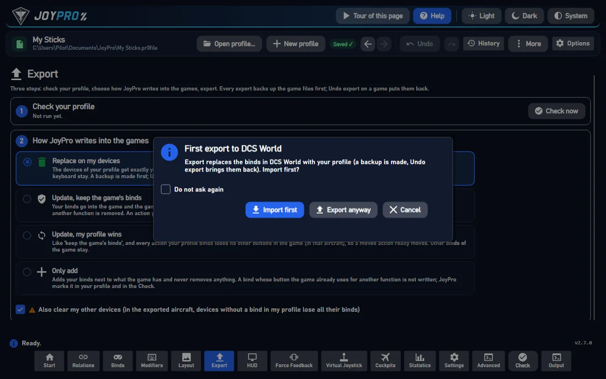

#不再詢問
核取方塊已撰寫工具提示 JoyPro 今後不再詢問，直接執行。「設定 > 確認」可恢復詢問。
有些視窗和面板會顯示在任何開啟的頁面上方：JoyPro 變更遊戲檔案或設定檔前的問題、遊戲對其控制設定所做的變更（遊戲監看程式）、針對單一動作的 移到另一個按鈕、針對多個動作或關聯的 移動到...，以及更新提示。本頁會說明它們每一個，以及其中的每個按鈕。


在 JoyPro 做出會移除綁定、覆寫檔案或取代設定檔大部分內容的事情之前，它會先詢問。視窗會寫出會發生什麼事（「要以取代模式匯出到 DCS 嗎？您裝置上不在設定檔中的綁定將會被移除。」），並提供：
有些問題附有 不再詢問。設定 > 確認 會列出這些問題，並可以把它們重新開啟。
當您在遊戲中變更綁定並關閉遊戲時，JoyPro 會注意到（如果遊戲監看程式已開啟，在「開始」頁面）。一個面板會列出每項變更（「Landing Gear Up/Down：現在在 Throttle BTN 22 上」），附有勾選項和它所屬的關聯：
一個關聯是一個按鈕和它所有的動作。如果只想把其中一個（某款遊戲的動作）移到另一個按鈕，請在動作（「關聯」頁面）或綁定列（「綁定」頁面）上按右鍵，然後選擇 移到另一個按鈕...。按下新的按鈕（或選擇裝置和輸入），然後按 移動。
關聯中選取的動作（Ctrl／Shift+點擊，移動到...）或多個選取關聯的動作（「關聯」清單中的 將動作移動到...）會移到另一個關聯。選擇 新增關聯 並輸入名稱（它會取得這些動作的類型：軸或按鈕），或選擇 現有關聯（同一類型） 並從清單中挑選（搜尋方塊可以縮小範圍）。移動 會一步完成；按 Ctrl+Z 可以復原。
啟動時（以及使用 更多 > 檢查更新 時），JoyPro 會向 GitHub 查詢是否有較新的版本。提示會顯示新功能，並提供 立即更新、稍後、略過此版本 和 發佈頁面。
共四個步驟：
遊戲關閉後，監看程式會把它的控制設定和上次匯出做比較，並詢問您：
| # | 誰 | 會發生什麼 |
|---|---|---|
| 1 | 您 | 在遊戲中更改綁定，然後關閉遊戲。 |
| 2 | JoyPro | 把遊戲的控制設定和上次匯出或匯入做比較。 |
| 3 | JoyPro | 顯示「DCS 變更了它的控制設定」面板。 |
| 4 | 您 | 勾選變更，選擇關聯，然後按 接管。 |
| 5 | JoyPro | 更新設定檔（一個復原步驟）。 |
當有多個關聯使用變更的按鈕時，每一列都有一個方塊可以選擇關聯，或選擇 新增關聯 並輸入名稱。未勾選的列視為忽略。
Views/ConfirmWindow.axaml、MainWindowViewModel.Confirm.cs（ConfirmAsync，可選擇加上第三個答案），記住的回答在 MainWindowViewModel.Confirmations.cs 中（設定 > 確認）。MainWindowViewModel.GameSync.cs；引擎 engine sync status、engine sync diff、engine sync apply、engine sync accept（sync-watcher）。MainWindowViewModel.MoveAction.cs；引擎 engine relations item move-to-input。MainWindowViewModel.RelationMultiSelect.cs；引擎 engine relations item move-to、engine relations mass move-actions（relation-multi-select）。MainWindowViewModel.Updates.cs、GitHub releases API（updates）。本頁背後的功能文件，從儲存庫產生：
25 個控制項，從程式的原始碼讀取：25 個已撰寫，0 個附有來自原始碼的資訊（工具提示、程式碼註解、引擎呼叫），0 個尚待補充。
工具提示 JoyPro 今後不再詢問，直接執行。「設定 > 確認」可恢復詢問。
關閉詢問；不會發生任何事。
勾選這項遊戲變更，以便「接管」。當您接管其他變更時，未勾選的變更會被視為忽略。
工具提示 設定檔維持原樣；下次匯出時會覆寫遊戲中的變更
工具提示 保留變更供稍後處理；JoyPro 會再次詢問
工具提示 已勾選的變更會寫入所選的關聯
關閉「移動到...」，不做任何變更。
工具提示 移動這些動作（按 Ctrl+Z 可復原）
對這些飛機而言，新按鈕已被佔用：原本在那裡的動作會移到被移動動作的舊按鈕。
新按鈕已被佔用：原本在那裡的動作會離開它，不再被綁定。
新按鈕已被佔用：被移動的動作會在同一個按鈕上取得自己的關聯，所以您在遊戲中按下它時，兩個動作都會觸發。
關閉「移到另一個按鈕」，不做任何變更。
工具提示 移動該動作（Ctrl+Z 可復原）
工具提示 GitHub 上的發佈版本（請從那裡自行下載）
工具提示 JoyPro 啟動時不再提示此版本（「檢查更新」仍會顯示）
工具提示 下次啟動時再詢問
關閉提示，不進行更新。下一次啟動時的檢查會再次提供這個版本；在那之前，「設定 > 關於 JoyPro 與更新 > 安裝更新」就可以安裝它。
工具提示 下載、檢查、安裝並重新啟動 JoyPro（您的設定檔和設定會保留）
關閉沒有東西可安裝的更新訊息。